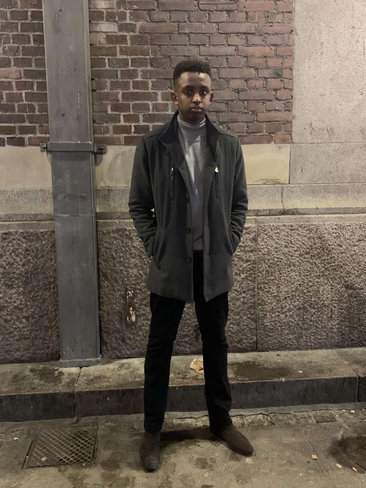

Ayub Alibare
Text 2
“Some people want it to happen, some wish it would happen, and others make it happen.”
― Michael Jordan
Mitt namn är Ayub Ali, Jag är 22 år gammal, Förutom att studera och jobba så sportar jag, Fotboll och Basket är primära sprterna.
- Repository innehåller alla dina projekts filar och varje fils historik.
- Branch är en unik rad av kodändringar med ett unikt namn. Varje Repository kan ha en eller fler branches.
- Clone är använt för att skapa en kopia av en specifik repository eller branch inom ett repository.
